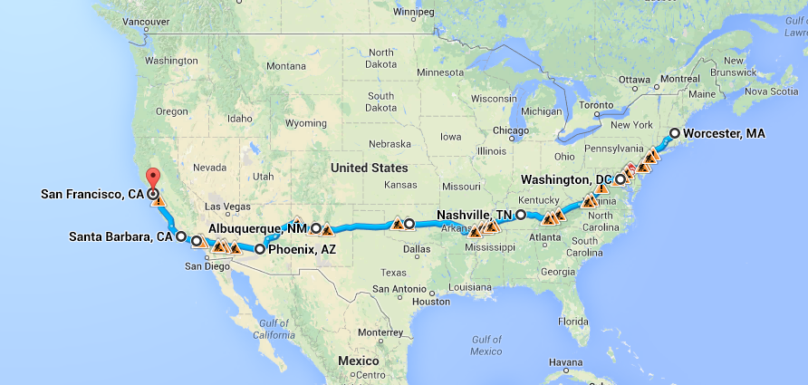
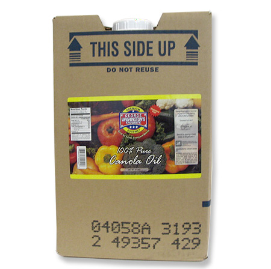
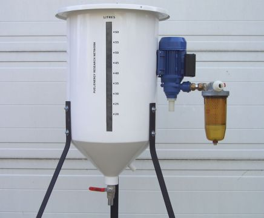
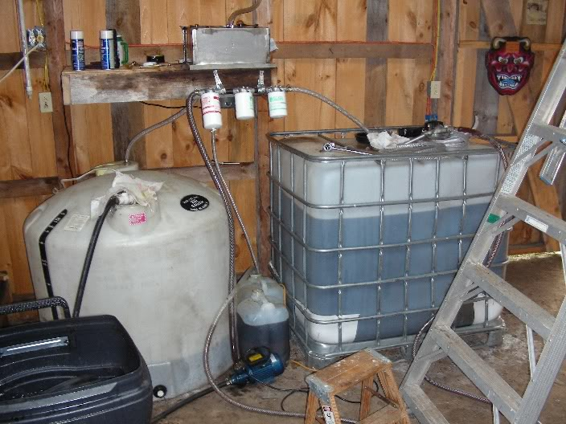
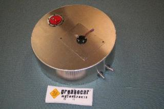
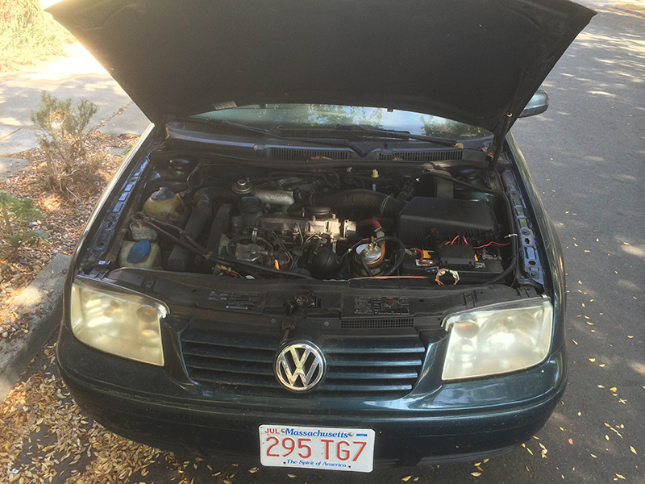
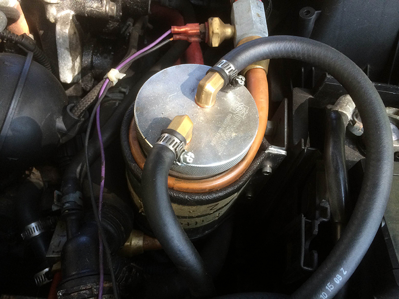

slides advance every 15s, press → to start
Biofuels
Vegetable oil & Biodiesel
Vegetable oil & Biodiesel
Designed to run on peanut oil
1890s
Viscocity
Cold weather
Canola Oil, Corn oil, Soy oil all viscous
So let's make biodiesel
Veg oil
...Science...
Biodiesel!
But it's hard to make biodiesel
Why not just use veg oil?
And why not use waste oil?
2 Challenges
#1 Particles & dirt

Viscocity
Answer: modify the car



Drive it